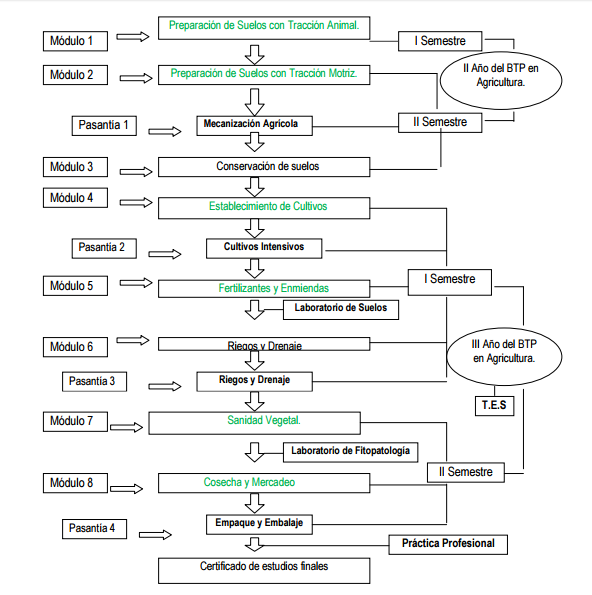

Explora las carreras técnicas profesionales que ofrecemos en el Instituto Técnico Alejandro Flores
El perfil contiene el conjunto de Conocimientos, habilidades, destrezas, actitudes y Comportamientos integrados que caracterizan las competencias técnicas específicas alcanzadas por el egresado de la carrera de Bachiller Técnico Profesional en Informática.


El egresado del Bachillerato Técnico Profesional en Agricultura tendrá las siguientes competencias: Realiza investigación de mercado, y en función del resultado de esta investigación: Planifica, organiza, dirige, y controla los procesos de producción y comercialización de productos agrícolas, aplicando profesionalmente los conocimientos, normas y procedimientos técnicos, científicos, tecnológicos y legales en la producción agrícola, así como, en la salud, higiene y seguridad ocupacional, tomando en cuenta las regulaciones en ámbito nacional e internacional, según la naturaleza del cultivo en explotación; para contribuir a la solución de problemas en el proceso de producción y comercialización de productos agrícolas y en las situaciones de trabajo, de estudio y de la vida cotidiana.
Este bachillerato está destinado a la formación de profesionales para atender el sector administrativo, comercial, financiero, industrial y gubernamental; con competencias encaminadas a cubrir principalmente el registro contable, cálculos financieros, control y auditoria, operaciones fiscales y tributarias, gestión de operaciones crediticias y bancarias.


Brindar conocimientos acerca del mantenimiento y servicio de instalaciones eléctricas residenciales, comerciales, del manejo de herramientas, equipo de diagnóstico y técnicas de montaje, cableado control de circuitos varios, incluyendo circuitos de control de motores eléctricos.


Brindar conocimientos acerca del mantenimiento y servicio de instalaciones eléctricas residenciales, comerciales, del manejo de herramientas, equipo de diagnóstico y técnicas de montaje, cableado control de circuitos varios, incluyendo circuitos de control de motores eléctricos.


En el sistema educativo de Honduras el Bachillerato en Ciencias y Humanidades es el espacio académico que permite al educando alcanzar la madurez necesaria para la realización de estudios de nivel universitario, donde su perfil del egresado, se consigna a unos pre-requisitos académicos de la educación. Su estructura de la formación está distribuida en campos diferentes donde se han diseñado planes y programas de estudio que faciliten la adquisición de los conocimientos, habilidades y destrezas en función del desarrollo de competencias del egresado para el análisis y solución de problemas en diferentes situaciones